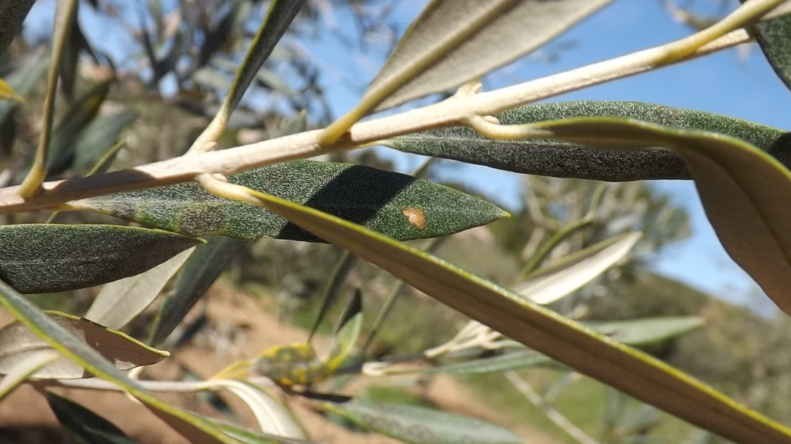
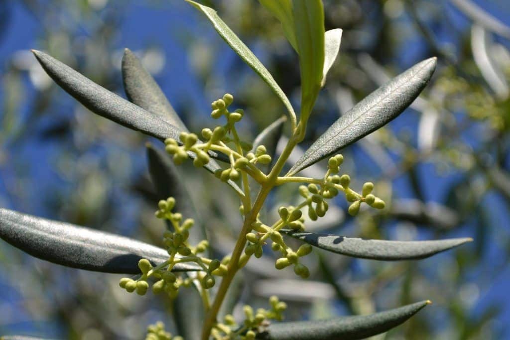
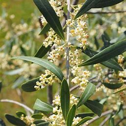
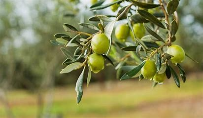
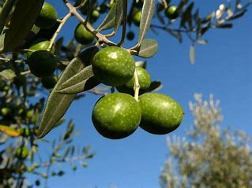
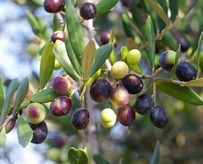
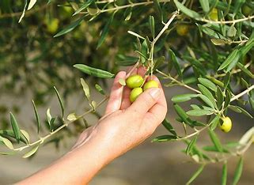
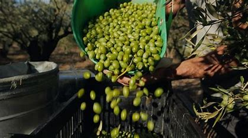

calendar
janvier
les oliviers sont généralement en période de dormance، se reposant avant le début de la nouvelle saison de croissance.
clickfévrier
les bourgeons des oliviers commencent lentement à gonfler، signe précoce de la prochaine floraison.
clickmars
les oliviers montrent les premiers signes de croissance active، avec les nouvelles pousses et les feuilles émergentes.
clickavril
la floraison des oliviers commence، avec de petites fleurs blanches apparaissant sur les branches.
clickmai
les fleurs des oliviers sont en pleine floraison، ce qui est crucial pour la pollinisation et la future production d'olives.
clickjuillet
les olives continuent de croître، devenant plus grandes et plus mûres، avec une couleur encore verte.
clickaoût
les olives commencent à changer de couleur، passant du vert au jaune، signe de maturation.
clickseptembre
En septembre، les olives deviennent pourpres ou noires، atteignant leur pleine maturité.
clickoctobre
la récolte des olives commence، les fruits mûrs étant cueillis pour la production d'huile d'olive.
clicknovembre

la récolte se poursuit، et les oliviers commencent à ralentir leur croissance avec l'arrivée de l'hiver.
clickdécembre
la plupart des olives ont été récoltées، et les oliviers entrent à nouveau en période de repos.
click